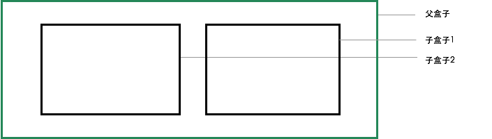

<div ref="streamContainer" class="stream-container">
    <div class="post-list-container post-list-container-shadow">
        <div class="post">
            <div class="post-head-wrapper-text-only"
                 style="background-image: url('')">
                <div class="post-title">
                    移动端自适应单位
                    <div class="post-meta">
                        <time datetime="2017-04-09T22:01:06.000Z" itemprop="datePublished">
                            2017-04-09 22:01
                        </time>&nbsp;
                        
                        
                        <i class="material-icons" style="">folder</i>
                        
                        <a href='/categories/CSS/'>CSS</a>
                        
                        
    
                        
                        
                        <i class="material-icons" style="">label</i>
                        
                        <a href='/tags/HTML-CSS/'>HTML/CSS</a>, 
                        
                        <a href='/tags/CSS3/'>CSS3</a>, 
                        
                        <a href='/tags/自适应/'>自适应</a>
                        
                        
                    </div>
                </div>
            </div>
    
            <div class="post-body-wrapper">
                <div class="post-body">
                    <!-- no node -->

<span id="more"></span>

<p>主要介绍下移动端自适应的一些常用单位，比如：rem、vw、vh，配合传统的px、百分比、<code>&lt;viewport&gt;</code>标签，兼容适配移动端的各种分辨率的手机端。</p>
<h2 id="单位介绍"><a href="#单位介绍" class="headerlink" title="单位介绍"></a>单位介绍</h2><ul>
<li><code>rem</code>：root emphasize，根元素的font-size。</li>
<li><code>vw</code>：1vw = 1%屏幕宽度。</li>
<li><code>vh</code>：1vh = 1%屏幕高度。</li>
<li><code>vmin</code>、<code>vmax</code>：关于视口高度和宽度两者的最小值或者最大值。</li>
</ul>


<h2 id="适配"><a href="#适配" class="headerlink" title="适配"></a>适配</h2><p>以下假定已经存在一个使用px单位，且完全适配320xp宽度手机的页面。</p>
<h3 id="1-改变viewport的initial-scale的数值"><a href="#1-改变viewport的initial-scale的数值" class="headerlink" title="1.改变viewport的initial-scale的数值"></a>1.改变viewport的initial-scale的数值</h3><p>比如适配的目标的宽度为400px</p>
<pre class="line-numbers language-css"><code class="language-css">initial-scale=<span class="token number">1.25</span> // <span class="token number">400</span>/<span class="token number">320</span>=<span class="token number">1.25</span>
<span aria-hidden="true" class="line-numbers-rows"><span></span></span></code></pre>
<p>但这里有个缺点，就是得提前知道所适配的设备的尺寸,然后服务端根据userAgent来判断。</p>
<pre class="line-numbers language-html"><code class="language-html">    &lt;% if(device === 1)<span class="token entity" title="&#123;">&amp;#123;</span> %>         <span class="token tag"><span class="token tag"><span class="token punctuation">&lt;</span>meta</span> <span class="token attr-name">name</span><span class="token attr-value"><span class="token punctuation">=</span><span class="token punctuation">"</span>viewport<span class="token punctuation">"</span></span> <span class="token attr-name">content</span><span class="token attr-value"><span class="token punctuation">=</span><span class="token punctuation">"</span>width<span class="token punctuation">=</span>device-width,initial-scale<span class="token punctuation">=</span>1.0,maximum-scale<span class="token punctuation">=</span>2.0,user-scalable<span class="token punctuation">=</span>no<span class="token punctuation">"</span></span> <span class="token punctuation">/></span></span>     <span class="token tag"><span class="token tag"><span class="token punctuation">&lt;</span>%</span> <span class="token attr-name">&amp;#125;</span> <span class="token attr-name">%</span><span class="token punctuation">></span></span>
    &lt;% if(device === 2)<span class="token entity" title="&#123;">&amp;#123;</span> %>         <span class="token tag"><span class="token tag"><span class="token punctuation">&lt;</span>meta</span> <span class="token attr-name">name</span><span class="token attr-value"><span class="token punctuation">=</span><span class="token punctuation">"</span>viewport<span class="token punctuation">"</span></span> <span class="token attr-name">content</span><span class="token attr-value"><span class="token punctuation">=</span><span class="token punctuation">"</span>width<span class="token punctuation">=</span>device-width,initial-scale<span class="token punctuation">=</span>1.5,maximum-scale<span class="token punctuation">=</span>2.0,user-scalable<span class="token punctuation">=</span>no<span class="token punctuation">"</span></span> <span class="token punctuation">/></span></span>     <span class="token tag"><span class="token tag"><span class="token punctuation">&lt;</span>%</span> <span class="token attr-name">&amp;#125;</span> <span class="token attr-name">%</span><span class="token punctuation">></span></span>
<span aria-hidden="true" class="line-numbers-rows"><span></span><span></span></span></code></pre>
<p>或者使用js计算缩放比例 ,然后替换initial-scale的值</p>
<pre class="line-numbers language-javascript"><code class="language-javascript"><span class="token keyword">var</span> scale <span class="token operator">=</span>  screen<span class="token punctuation">.</span>width<span class="token operator">/</span><span class="token number">320</span><span class="token punctuation">,</span>
    viewport <span class="token operator">=</span>  document<span class="token punctuation">.</span><span class="token function">querySelector</span><span class="token punctuation">(</span><span class="token string">'meta[name=viewport]'</span><span class="token punctuation">)</span><span class="token punctuation">;</span>
    viewport<span class="token punctuation">.</span><span class="token function">setAttribute</span><span class="token punctuation">(</span><span class="token string">'content'</span><span class="token punctuation">,</span> viewport<span class="token punctuation">.</span><span class="token function">getAttribute</span><span class="token punctuation">(</span><span class="token string">'content'</span><span class="token punctuation">)</span><span class="token punctuation">.</span><span class="token function">replace</span><span class="token punctuation">(</span><span class="token regex">/(initial-scale)=[\d\.]?\d/</span><span class="token punctuation">,</span><span class="token string">'$1='</span><span class="token operator">+</span>scale<span class="token punctuation">)</span><span class="token punctuation">)</span><span class="token punctuation">;</span>
<span aria-hidden="true" class="line-numbers-rows"><span></span><span></span><span></span></span></code></pre>
<p>但使用js会有滞后性，页面会多渲染一次，且会导致页面闪烁</p>
<blockquote>
<p>首屏渲染 -&gt; js改变initial-scale -&gt; 二次渲染，页面放大(闪烁)</p>
</blockquote>
<h3 id="2-替换px转而使用rem"><a href="#2-替换px转而使用rem" class="headerlink" title="2.替换px转而使用rem"></a>2.替换px转而使用rem</h3><p></p>
<p>设定父盒子的css为</p>
<pre class="line-numbers language-css"><code class="language-css">父盒子&amp;<span class="token hexcode">#123</span><span class="token punctuation">;</span>
  <span class="token property">width</span><span class="token punctuation">:</span> <span class="token number">320</span>px<span class="token punctuation">;</span>
&amp;<span class="token hexcode">#125</span><span class="token punctuation">;</span>
<span aria-hidden="true" class="line-numbers-rows"><span></span><span></span><span></span></span></code></pre>
<p>设置根元素的font-size为屏幕的某个比例</p>
<pre class="line-numbers language-css"><code class="language-css">html &amp;<span class="token hexcode">#123</span><span class="token punctuation">;</span>
  <span class="token property">font-size</span><span class="token punctuation">:</span> <span class="token number">16</span>px<span class="token punctuation">;</span>
&amp;<span class="token hexcode">#125</span><span class="token punctuation">;</span>
<span aria-hidden="true" class="line-numbers-rows"><span></span><span></span><span></span></span></code></pre>
<p>那么父盒子的css为</p>
<pre class="line-numbers language-css"><code class="language-css">父盒子&amp;<span class="token hexcode">#123</span><span class="token punctuation">;</span>
  <span class="token property">width</span><span class="token punctuation">:</span> <span class="token number">20</span>rem<span class="token punctuation">;</span> //换算为<span class="token number">320</span>px，充满屏幕宽度
  <span class="token property">height</span><span class="token punctuation">:</span> <span class="token number">10</span>rem<span class="token punctuation">;</span> //换算为<span class="token number">160</span>px，盒子比例达到<span class="token property">1</span><span class="token punctuation">:</span><span class="token number">1</span>
&amp;<span class="token hexcode">#125</span><span class="token punctuation">;</span>
<span aria-hidden="true" class="line-numbers-rows"><span></span><span></span><span></span><span></span></span></code></pre>
<p>但是css的替换以及rem的计算还是比较繁琐的，这里建议使用sass的函数然后使用正则替换</p>
<pre class="line-numbers language-javascript"><code class="language-javascript"><span class="token punctuation">(</span><span class="token regex">/(\d+[\.\d+]?px)/g</span><span class="token punctuation">,</span><span class="token string">'rem($1)'</span><span class="token punctuation">)</span>
$baiscRem<span class="token punctuation">:</span>320px <span class="token operator">/</span> <span class="token number">20</span> <span class="token comment" spellcheck="true">//这里假定为页面做20个等分 </span>
@<span class="token keyword">function</span> <span class="token function">rem</span><span class="token punctuation">(</span>$px<span class="token punctuation">)</span> @<span class="token keyword">return</span> <span class="token punctuation">(</span>$px <span class="token operator">/</span> $basicRem<span class="token punctuation">)</span> <span class="token operator">*</span> 1rem 
父盒子
    width<span class="token punctuation">:</span> <span class="token function">rem</span><span class="token punctuation">(</span>320px<span class="token punctuation">)</span><span class="token punctuation">;</span>
<span aria-hidden="true" class="line-numbers-rows"><span></span><span></span><span></span><span></span><span></span></span></code></pre>
<p>然后，使用css @media查询，确定rem的值。这里就比较具体了，需要根据实际的业务需求来决定所要适配的设备尺寸</p>
<pre class="line-numbers language-css"><code class="language-css"><span class="token comment" spellcheck="true">/* media.css */</span> 
<span class="token atrule"><span class="token rule">@media</span> screen and <span class="token punctuation">(</span><span class="token property">min-width</span><span class="token punctuation">:</span>320px<span class="token punctuation">)</span> and <span class="token punctuation">(</span><span class="token property">max-width</span><span class="token punctuation">:</span>320px<span class="token punctuation">)</span> &amp;#123<span class="token punctuation">;</span></span>
    html&amp;<span class="token hexcode">#123</span><span class="token punctuation">;</span>
        <span class="token property">font-size</span><span class="token punctuation">:</span> <span class="token number">320</span> / <span class="token number">320</span> * $basicRem<span class="token punctuation">;</span>
    &amp;<span class="token hexcode">#125</span><span class="token punctuation">;</span>
&amp;<span class="token hexcode">#125</span><span class="token punctuation">;</span>
<span class="token atrule"><span class="token rule">@media</span> screen and <span class="token punctuation">(</span><span class="token property">min-width</span><span class="token punctuation">:</span>400px<span class="token punctuation">)</span> and <span class="token punctuation">(</span><span class="token property">max-width</span><span class="token punctuation">:</span>400px<span class="token punctuation">)</span> &amp;#123<span class="token punctuation">;</span></span>
    html&amp;<span class="token hexcode">#123</span><span class="token punctuation">;</span>
        <span class="token property">font-size</span><span class="token punctuation">:</span> <span class="token number">400</span> / <span class="token number">320</span> * $basicRem<span class="token punctuation">;</span>
    &amp;<span class="token hexcode">#125</span><span class="token punctuation">;</span>
&amp;<span class="token hexcode">#125</span><span class="token punctuation">;</span>
<span aria-hidden="true" class="line-numbers-rows"><span></span><span></span><span></span><span></span><span></span><span></span><span></span><span></span><span></span><span></span><span></span></span></code></pre>
<blockquote>
<p>tips：如果不知道要兼容什么样的设备。可以再用户访问后，javascript收集该设备的相关信息，然后在服务端自动更新该文件的内容，加入新的@media规则。</p>
</blockquote>
<h3 id="3-关于vw，vh"><a href="#3-关于vw，vh" class="headerlink" title="3.关于vw，vh"></a>3.关于vw，vh</h3><p></p>
<p>宽高的1%，建议使用在各种布局的容器上，如上图的父盒子和子盒子。</p>
<pre class="line-numbers language-css"><code class="language-css">父盒子 &amp;<span class="token hexcode">#123</span><span class="token punctuation">;</span>
    <span class="token property">box-sizing</span><span class="token punctuation">:</span> border-box<span class="token punctuation">;</span>
    <span class="token property">padding</span><span class="token punctuation">:</span> <span class="token number">10</span>vw<span class="token punctuation">;</span>
    <span class="token property">width</span><span class="token punctuation">:</span> <span class="token number">100</span>vw<span class="token punctuation">;</span>
    <span class="token property">height</span><span class="token punctuation">:</span> <span class="token number">50</span>vw<span class="token punctuation">;</span>  <span class="token comment" spellcheck="true">/* 妥妥的2:1比例 */</span>
    <span class="token property">letter-spacing</span><span class="token punctuation">:</span> -<span class="token number">4</span>px<span class="token punctuation">;</span> <span class="token comment" spellcheck="true">/*消除行内元素的4px的空白间隔 */</span>
&amp;<span class="token hexcode">#125</span><span class="token punctuation">;</span> 
子盒子<span class="token number">1</span>,子盒子<span class="token number">2</span> &amp;<span class="token hexcode">#123</span><span class="token punctuation">;</span>
    <span class="token property">margin</span><span class="token punctuation">:</span> <span class="token number">0</span> <span class="token number">5</span>vw<span class="token punctuation">;</span>
    <span class="token property">width</span><span class="token punctuation">:</span> <span class="token number">30</span>vw<span class="token punctuation">;</span>
    <span class="token property">height</span><span class="token punctuation">:</span> <span class="token number">30</span>vw<span class="token punctuation">;</span>  <span class="token comment" spellcheck="true">/* 妥妥的1:1的比例 */</span>
    <span class="token property">display</span><span class="token punctuation">:</span>inline-block <span class="token punctuation">;</span>
&amp;<span class="token hexcode">#125</span><span class="token punctuation">;</span>
<span aria-hidden="true" class="line-numbers-rows"><span></span><span></span><span></span><span></span><span></span><span></span><span></span><span></span><span></span><span></span><span></span><span></span><span></span></span></code></pre>
<p>相比rem，使用vw和wh是非常直观的，让其他人看到就能知道，该界面是以怎么样的结构进行布局，利于维护。</p>
<p>但在具体深入到表现的地方，建议转而使用rem来配合。</p>
<h2 id="总结"><a href="#总结" class="headerlink" title="总结"></a>总结</h2><p>其中涉及的单位和元素较多，其实如果仅仅为了达成相同的页面效果，它们之间都可以相互替代。甚至使用最原始的px，配合js的计算，也能够做到相同的事情。</p>
<p>这是一个探索的过程，每个人喜好不一致，采用的方式也不尽相同。基于浏览器提供了丰富的方法，针对具体问题，具体分析，不停地尝试，最终找到最合适的方案。</p>

                </div>
            </div>

            
            
            
    
            
    
            
        </div>
    </div>
    
</div>


